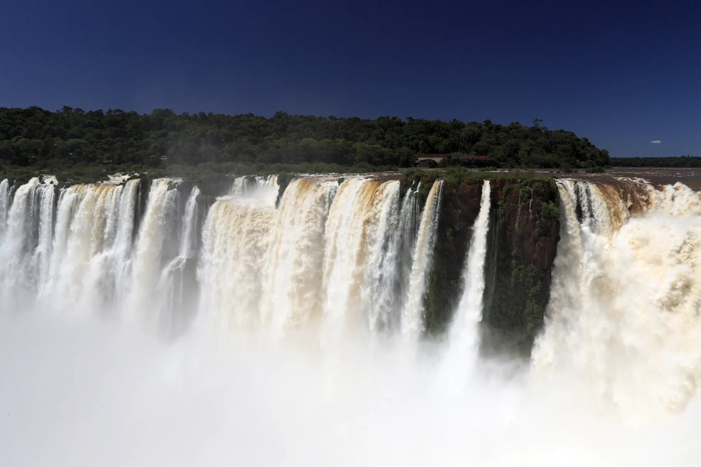
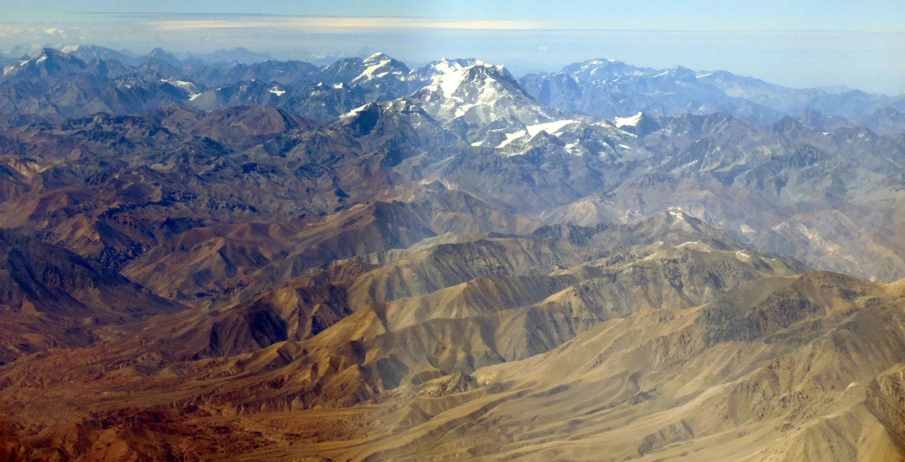
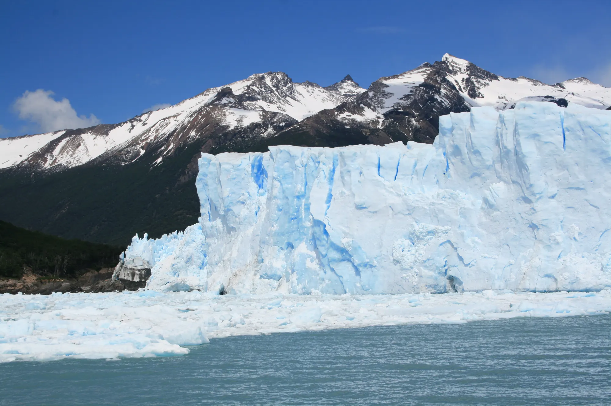

Noroeste
- Salta24°47′S · 65°25′O
Valles, viñedos de altura y pueblos de adobe.
- Jujuy24°11′S · 65°18′O
La Quebrada de Humahuaca, Purmamarca y las Salinas Grandes.



Destinos
Valles, viñedos de altura y pueblos de adobe.
La Quebrada de Humahuaca, Purmamarca y las Salinas Grandes.
Las cataratas, la selva y la Triple Frontera.
Humedales, yacarés y carpinchos a la vista.
Lagos, bosques y cerros sobre la cordillera.
El canal Beagle y el final del mapa.
Bodegas, alta montaña y el Aconcagua de fondo.
Ischigualasto y los cielos de Barreal.
La propuesta
El viaje sale de lo que querés hacer, no de un paquete armado.
Salimos de acá y conocemos el camino.
Sabés qué incluye y cuánto cuesta antes de decidir.
Cómo funciona
A dónde querés ir, cuándo y con quién.
Te pasamos el recorrido día por día y el precio.
Cambiamos lo que haga falta hasta que cierre.
Reservamos todo y te vas de viaje.
Por ejemplo